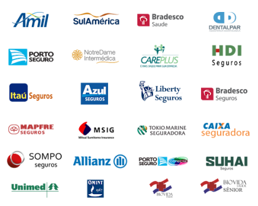

CONVÊNIOS
Se você possui um convênio de saúde e deseja iniciar um processo de psicoterapia, estamos aqui para ajudar. Trabalhamos com uma ampla gama de planos de saúde e oferecemos a possibilidade de reembolso, garantindo que você possa acessar o suporte psicológico de que precisa sem preocupações financeiras. Nossa equipe está preparada para orientá-lo em cada etapa, desde a verificação da cobertura do seu plano até o envio das documentações necessárias para o reembolso, proporcionando uma experiência tranquila e sem complicações.
Nossa política de reembolso é projetada para facilitar o acesso ao atendimento psicológico. Após cada sessão, fornecemos um recibo detalhado e uma fatura que você pode apresentar ao seu convênio. A partir daí, nosso suporte administrativo estará disponível para auxiliar no processo de envio da documentação e acompanhar o status do reembolso. Embora as políticas de cada convênio possam variar, trabalhamos para garantir que o processo seja o mais eficiente possível, permitindo que você se concentre no seu bem-estar enquanto cuidamos da parte burocrática.